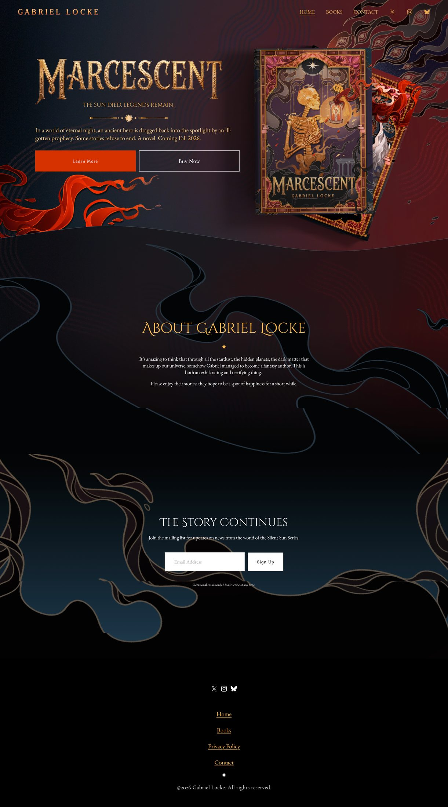
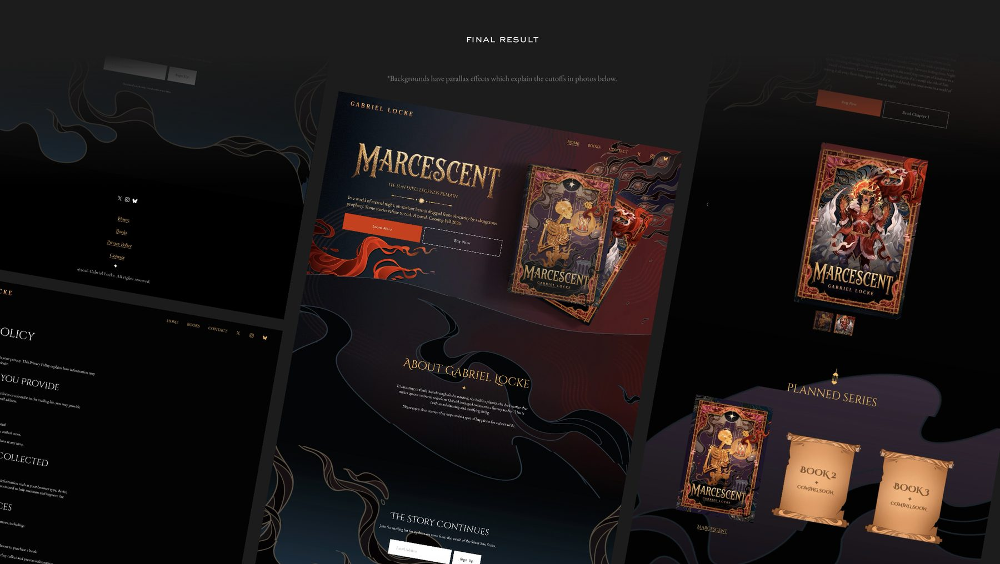
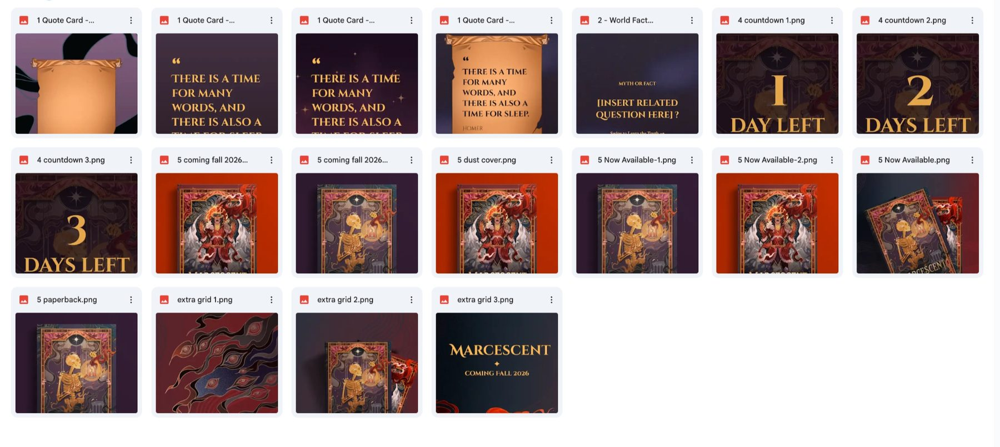
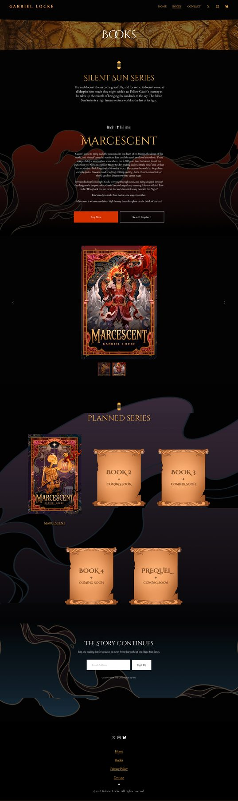
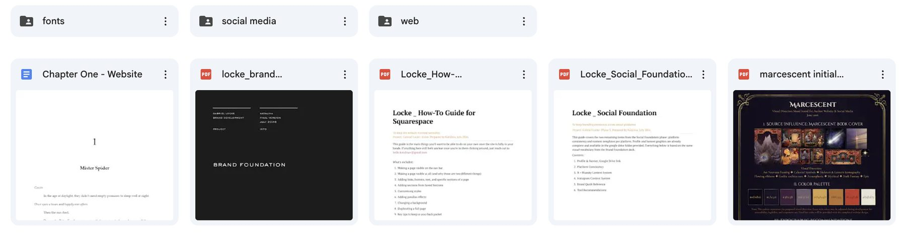

Gabriel Locke
Web Design, Branding, Social Media, Documentation · 2026

I created an author website for first-time self-publishing author Gabriel Locke. The project was educational for the author while creating an immersive experience for their coming readers. I also did research and asset creation for their social media setup to ensure their brand stays consistent across all platforms, and created a custom how-to guide so they can maintain and grow their Squarespace site as their book series grows.
Context
Gabriel Locke is a fantasy author releasing their first novel, Marcescent, in Fall 2026. An excellent writer with no experience in marketing, web design, or social media hired me.
What I Did
Website
A Squarespace site built for a first-time self-publishing author, with templates made so Gabriel could easily scale their website as their book series and fantasy world grows.
Brand and social
Research into how authors in their space present themselves, then a set of social templates, assets, and suggestions so their brand feels the same on every platform.
How-to guide
A custom guide written for them specifically, covering how to update pages, add books, and expand the site over time. They began with very little web design knowledge, and the goal was for them to leave able to run it themselves.
What I Learned
This was the first project where I had to ask a client where they stood on AI. It came up on the homepage hero image, where generative expand on a PSD layer was my first instinct. But Gabriel is an artist who commissions other artists and designers (moi), so I suspected it wouldn't be welcome. I asked, and I was right. They didn't want AI anywhere near the work, so none of it touched the final product and I solved the problem another way.
I hadn't thought to ask before. With past clients it was already built into how they worked, so the question never came up. Now I ask upfront, before I use it at all. It was kinda refreshing to have a project where optimization wasn't the point.
In the End
The site is live at gabriel-locke.com, where Gabriel maintains it themselves.
Client Review
“Working with Katalina has been a wonderful experience, especially for someone who has very little knowledge of website design. Because of her, I now have such a unique and eye-catching website that I am so excited to use to promote my books. She was very attentive to feedback and so supportive of making sure that I can modify and grow the website as my writing grows. I couldn't recommend working with her more, especially if you're in need of a beautiful and memorable design.”
– Gabriel Locke, Author
Artifacts



